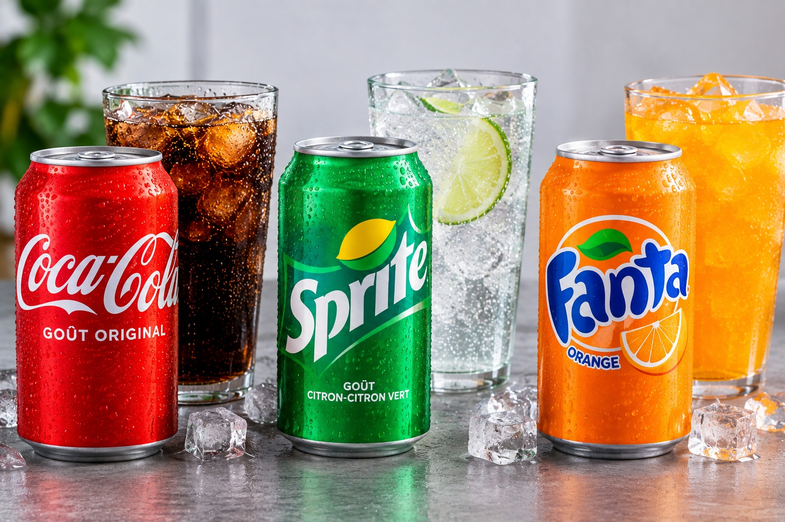
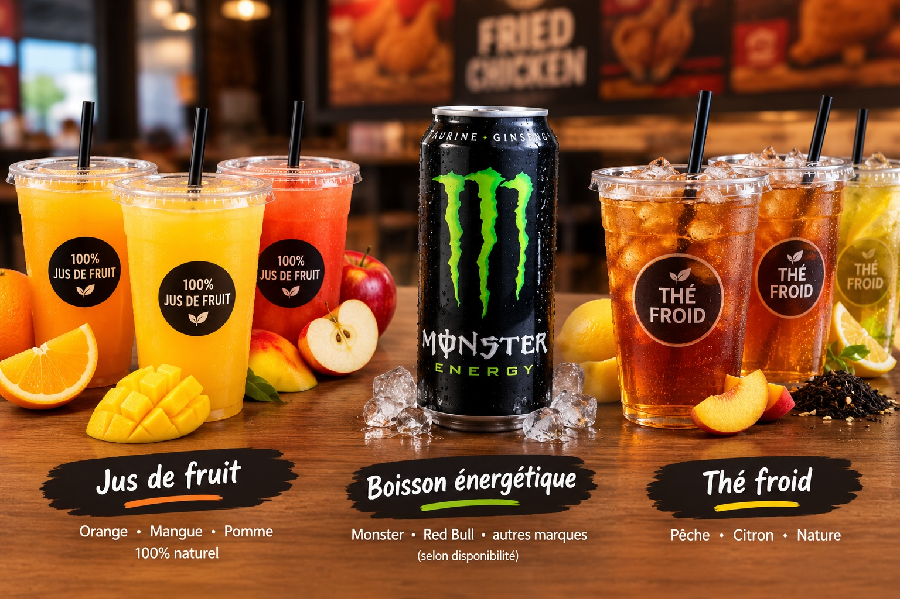
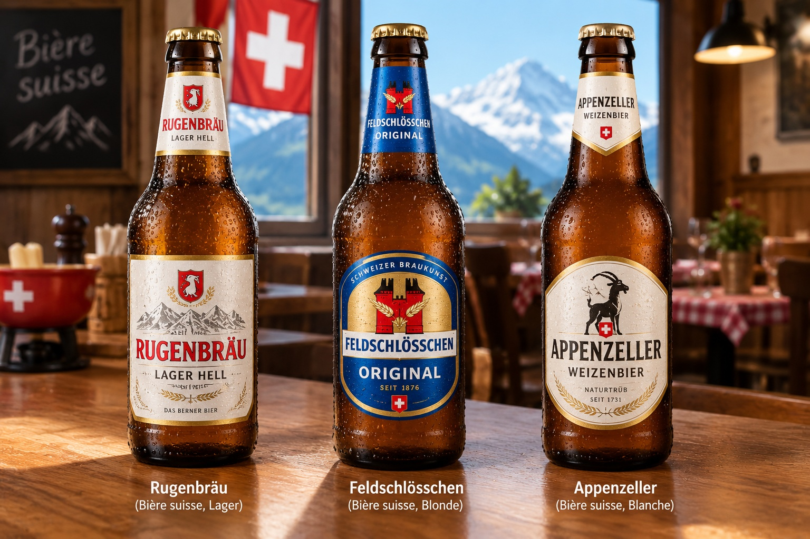
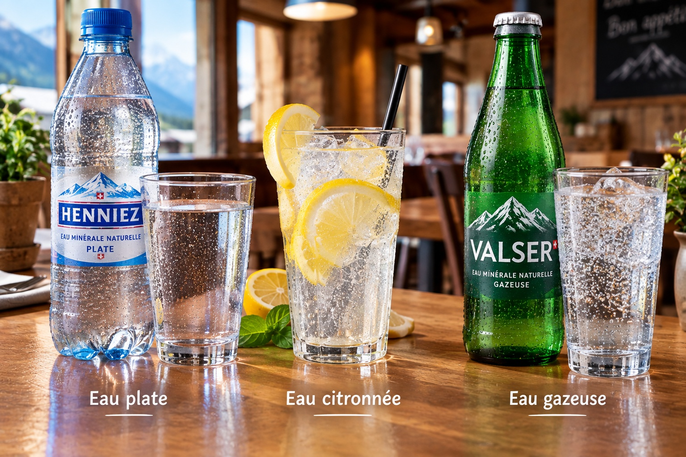

CHF 2,50
Boissons Sucrées : Coca-Cola, Sprite et Fanta, servis bien frais pour accompagner votre repas.
Nous vous proposons une sélection de boissons fraîches et rafraîchissantes, allant des sodas et jus de fruits aux eaux et thés froids, pour accompagner parfaitement votre repas.



